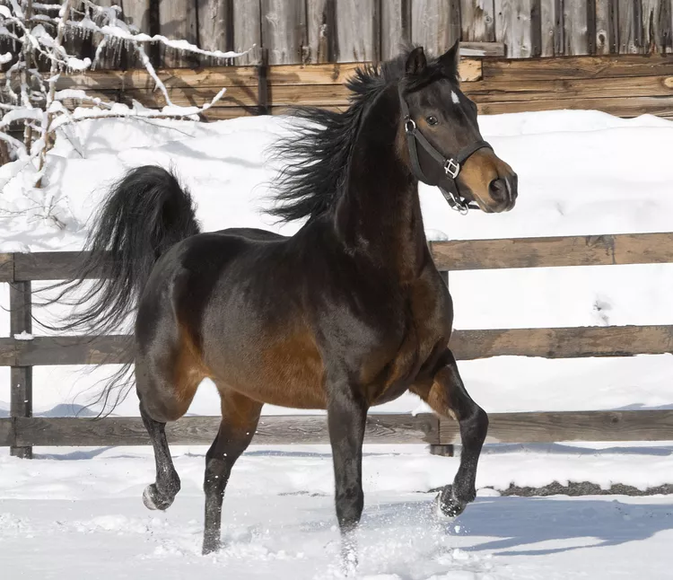

MORGAN
Weight:
900 - 2,200 pounds.
Height :
20 in.
24 in.
Length:
56 to 68 inches .
Color:
Bay, Black, Chestnut, and Gray.
Longevity:
25 – 30 yrs.
Morgan Personality
Morgan horses are known for their versatility, intelligence, and friendly disposition. They are sturdy, compact horses with strong endurance and a willingness to work. Morgan horses excel in various disciplines, including driving, dressage, jumping, and trail riding. They are known for their smooth gaits, especially the distinctive "Morgan trot." Overall, Morgan horses are highly valued for their all-around abilities, loyalty, and engaging personalities.
What to expect
Morgan horses are known for their versatility, strength, and gentle temperament. Here are a few key points to expect from Morgan horses: 1.Versatility:Morgans excel in various disciplines, including driving, riding, and competitive events such as dressage, jumping, and endurance riding. 2.Strength and Stamina:They are sturdy horses with excellent endurance, making them suitable for long rides and tasks requiring sustained effort. 3.Gentle Temperament:Morgans are known for their friendly and willing nature, making them suitable for riders of different skill levels, including beginners and children.
History of the Morgan
The Morgan horse is one of the earliest horse breeds developed in the United States, tracing its roots back to a single foundation sire named Justin Morgan. The horse breed was named after its owner, Justin Morgan, who lived in Vermont in the late 18th century. Justin Morgan was a small, versatile horse known for his strength, stamina, and friendly disposition. The Morgan breed quickly gained popularity due to its versatility, intelligence, and adaptability. They were used for various tasks such as pulling carriages, plowing fields, and as cavalry horses during the Civil War. The breed's reputation for reliability and hardiness spread throughout the United States, leading to its widespread use in many different roles.